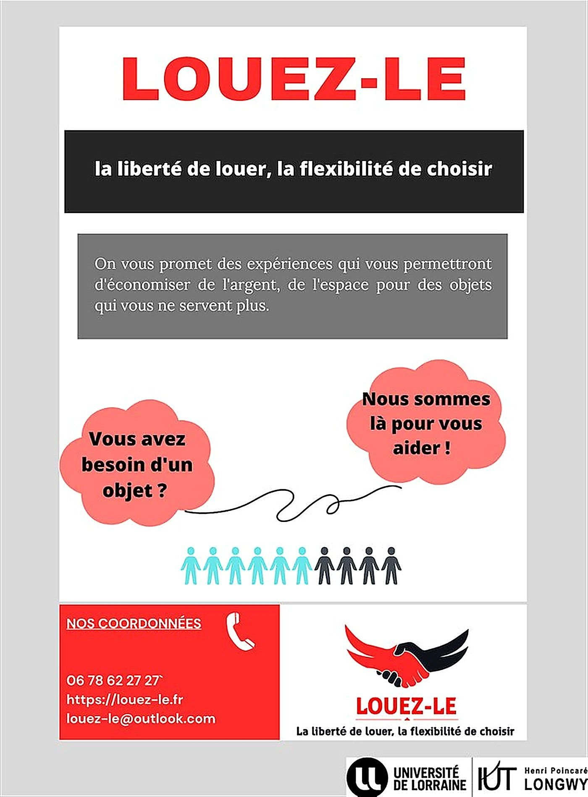
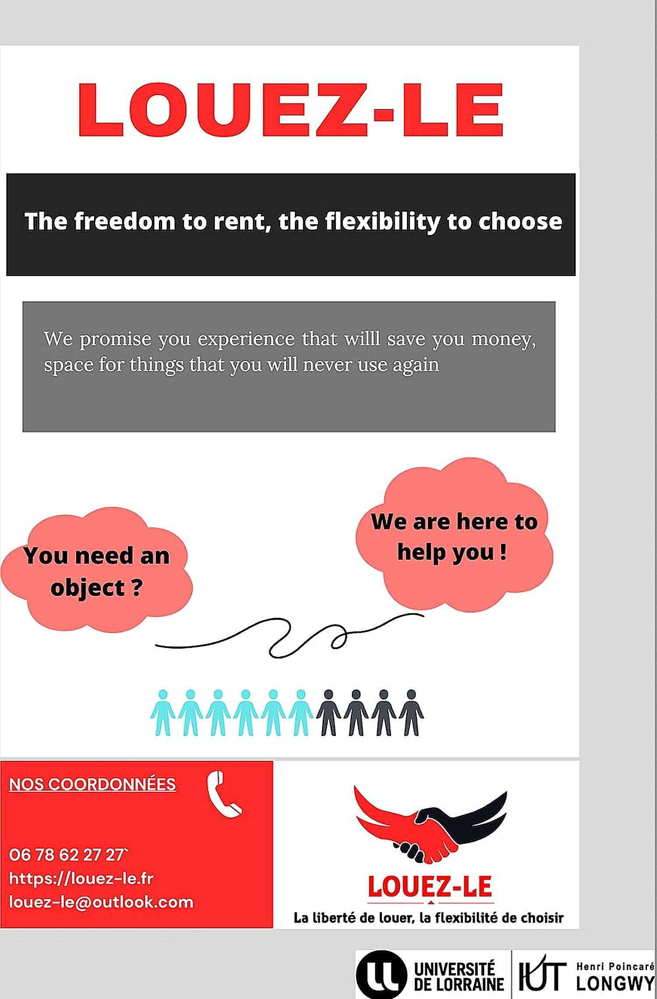

4étudiants dans l’équipe
2affiches produites
2langues de communication
Le contexte et la commande
- Business Game de fin de première année : mener un projet entrepreneurial complet en équipe, de la conception à la communication.
- Projet Louez-Le : une offre de location d’objets du quotidien, pensée pour économiser de l’argent et de la place.
- Contrainte imposée : produire les supports de communication en français et en anglais.
La problématique
Travailler en équipe sur un projet entrepreneurial complet, de la conception à la communication.
Le travail réalisé
- Coopération constante en groupe, dans une bonne dynamique collective qui a favorisé la productivité.
- Production d’affiches de communication en français et en anglais.
- Construction d’un bilan et d’un compte de résultat prévisionnels à partir de la structure de coûts.


Ce que j’ai produit
- Affiches de communication bilingues, avec identité visuelle, slogan et coordonnées.
- Bilan et compte de résultat prévisionnels construits à partir de la structure de coûts.
- Présentation collective du projet devant le groupe et les enseignants.
Ce que j’en retire
- Coopérer durablement en équipe : répartition des rôles, entraide et dynamique collective.
- Adapter un message commercial à une autre langue sans le dénaturer.
- Comprendre le lien direct entre une offre commerciale et sa traduction financière.
Outils et méthodes mobilisés
CanvaCommunication bilingueCompte de résultatTravail en équipe